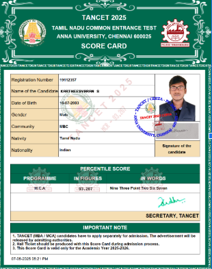

Name: Kartheesvaran |
Roll No.: 25MX212 |
College: PSG College of Technology, Coimbatore
Short Introduction
I’m Kartheesvaran (Roll No. 25MX205), an MCA student at PSG College of Technology.
I enjoy web application development, data structures & algorithms, and building
small projects that solve real problems. This blog records my learning journey
and milestones.
Recent Achievements
Qualified TANCET MCA with Strong Percentile
Secured a high percentile in TANCET (MCA), demonstrating strong quantitative aptitude,
logical reasoning, and computer awareness. This achievement motivated me to deepen my
preparation in core CS subjects and problem solving.

TANCET result snapshot
Smart India Hackathon (Runner Up)
Build an malware detection application for the windows.